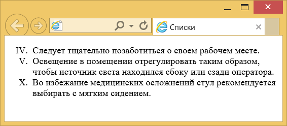
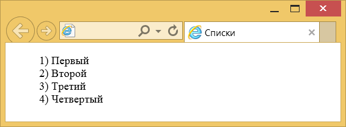
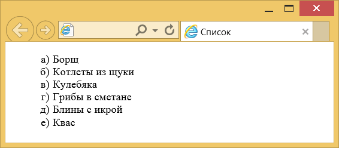

Нумерованные списки
Нумерованные списки представляют собой набор элементов с их порядковыми номерами. Вид и тип нумерации зависит от параметров элемента <ol>, который и применяется для создания списка. В качестве нумерующих элементов могут выступать следующие значения:
- арабские цифры (1, 2, 3, ...);
- арабские цифры c нулём впереди для цифр меньше десяти (01, 02, 03, ...,10);
- прописные латинские буквы (А, В, С, ...);
- строчные латинские буквы (а, b, с, ...);
- римские цифры в верхнем регистре (I, II, III, ...);
- римские цифры в нижнем регистре (i, ii, iii, ...);
- армянская нумерация;
- грузинская нумерация.
С практической точки зрения, принципы отображения элементов маркированного списка могут аналогичным способом применяться и к нумерованному списку. Но учитывая, что мы имеем дело с перечислением, существуют некоторые особенности, о которых и пойдёт речь далее.
Нумерация списка
Допускается начинать список с любого номера; для этой цели применяется атрибут start элемента <ol> или value у элемента <li>. В качестве значения указывается любое целое положительное число. При этом неважно, какой тип нумерации установлен, даже если в качестве списка используются латинские буквы. Если одновременно для списка применяются атрибуты start и value, то последний имеет большее преимущество, и нумерация отображается с числа, указанного value, как показано в примере 1.
Пример 1. Изменение нумерации списка
<!DOCTYPE html>
<html>
<head>
<meta charset="utf-8">
<title>Списки</title>
</head>
<body>
<ol type="I" start="4">
<li>Следует тщательно позаботиться о своем рабочем месте.</li>
<li>Освещение в помещении отрегулировать таким образом, чтобы источник
света находился сбоку или сзади оператора.</li>
<li value="10">Bo избежание медицинских осложнений стул рекомендуется
выбирать с мягким сидением.</li>
</ul>
</body>
</html>Первый элемент списка в данном примере будет начинаться с римской цифры IV, поскольку указан атрибут start="4", затем идет номер V, а последний элемент следует не по порядку и назначается номером X (рис. 1).

Рис. 1. Римские цифры в списке
Написание чисел
По умолчанию нумерованный список имеет определённый вид: вначале идет число, затем точка и после этого через пробел отображается текст. Такая форма написания наглядна и удобна, но некоторые разработчики предпочитают видеть другой способ оформления нумерации списков. А именно, чтобы вместо точки шла закрывающая скобка, как продемонстрировано на рис. 2 или нечто подобное.

Рис. 2. Вид нумерованного списка со скобкой
Стили позволяют поменять вид нумерации списков с помощью свойств content и counter-increment. Вначале для селектора ol требуется задать counter-reset: item, это нужно для того, чтобы нумерация в каждом новом списке начиналась заново. В противном случае, нумерация будет продолжена и вместо 1,2,3 можно будет увидеть 5,6,7. Значение item это уникальный идентификатор счётчика, мы его выбираем сами. Далее необходимо спрятать исходные маркеры через стилевое свойство list-style-type со значением none.
Свойство content, как правило, работает в сочетании с псевдоэлементами ::after и ::before. Так, конструкция li::before говорит о том, что перед каждым элементом списка необходимо добавить какое-то содержание (пример 2).
Пример 2. Создание своей нумерации
li::before {
content: counter(item) ') '; /* Добавляем к числам скобку */
counter-increment: item; /* Задаём имя счетчика */
}Свойство content со значением counter(item) выводит число; добавляя скобку, как показано в данном примере, получим требуемый вид нумерации. counter-increment необходим для увеличения номера списка на единицу. Обратите внимание, что везде используется один и тот же идентификатор с именем item. Окончательный код показан в примере 3.
Пример 3. Изменение вида списка
<!DOCTYPE html>
<html>
<head>
<meta charset="utf-8">
<title>Списки</title>
<style>
ol {
list-style-type: none; /* Убираем исходные маркеры */
counter-reset: item; /* Обнуляем счетчик списка */
}
li:before {
content: counter(item) ') '; /* Добавляем к числам скобку */
counter-increment: item; /* Задаём имя счетчика */
}
</style>
</head>
<body>
<ol>
<li>Первый</li>
<li>Второй</li>
<li>Третий</li>
<li>Четвертый</li>
</ol>
</body>
</html>Приведённым способом можно делать любой вид нумерованного списка, например, брать число в квадратные скобки, в стилях при этом изменится только одна строка.
content: '[' counter(item) '] ';Список с русскими буквами
Нумерованный список есть с латинскими буквами, а вот русских букв для списка нет. Их можно добавить искусственно, воспользовавшись вышеприведённым приёмом. Поскольку нумерация делается через стили, сам список остаётся исходным, к нему лишь добавляется выбранный класс, назовём его cyrilic (пример 4).
Пример 4. Код для создания списка
<ol class="cyrilic">
<li>Один</li>
<li>Два</li>
<li>Три</li>
</ol>Добавление букв осуществляется с помощью псевдоэлемента ::before и свойства content. Поскольку в каждой строке должна быть своя буква, воспользуемся псевдоклассом :nth-child(1), в скобках пишется номер буквы. Первой буквой, естественно, идёт А, второй — Б, третьей — В и т. д. Весь этот набор добавляется к селектору li следующим образом (пример 5).
Пример 5. Применение псевдокласса :nth-child
.cyrilic li:nth-child(1)::before { content: 'а)'; }
.cyrilic li:nth-child(2)::before { content: 'б)'; }
.cyrilic li:nth-child(3)::before { content: 'в)'; }В этом примере после каждой буквы идёт круглая скобка, все буквы строчные. Вы можете определить собственный вид нумерации списка, к примеру она может содержать заглавные буквы с точкой, с одной или двумя скобками или одни только буквы. В отличие от стандартной нумерации мы здесь вольны делать что угодно. Списка из десяти букв должно хватить практически для всех ситуаций, но если этого внезапно окажется мало, ничего не мешает расширить наш список, включив в него хоть все буквы русского алфавита.
Окончательно настраиваем выравнивание и положение букв, по желанию указываем размер шрифта, цвет и другие параметры (пример 6).
Пример 6. Список с русскими буквами
<!DOCTYPE html>
<html>
<head>
<meta charset="utf-8">
<title>Список</title>
<style>
.cyrilic {
list-style-type: none; /* Прячем исходную нумерацию */
}
.cyrilic li::before {
margin-right: 5px; /* Расстояние от буквы до текста */
width: 1em; /* Ширина */
text-align: right; /* Выравнивание по правому краю */
display: inline-block; /* Строчно-блочный элемент */
}
.cyrilic li:nth-child(1)::before { content: 'а)'; }
.cyrilic li:nth-child(2)::before { content: 'б)'; }
.cyrilic li:nth-child(3)::before { content: 'в)'; }
.cyrilic li:nth-child(4)::before { content: 'г)'; }
.cyrilic li:nth-child(5)::before { content: 'д)'; }
.cyrilic li:nth-child(6)::before { content: 'е)'; }
.cyrilic li:nth-child(7)::before { content: 'ё)'; }
.cyrilic li:nth-child(8)::before { content: 'ж)'; }
.cyrilic li:nth-child(9)::before { content: 'з)'; }
.cyrilic li:nth-child(10)::before { content: 'и)'; }
</style>
</head>
<body>
<ol class="cyrilic">
<li>Борщ</li>
<li>Котлеты из щуки</li>
<li>Кулебяка</li>
<li>Грибы в сметане</li>
<li>Блины с икрой</li>
<li>Квас</li>
</ol>
</body>
</html>Результат данного примера показан на рис. 3.

Рис. 3. Русские буквы в списке
Плюсов у данного метода добавления нумерации много.
- Можно использовать буквы любого алфавита, не только русского.
- Мы сами определяем, включать в список спорные буквы, такие как Ё и Й, или нет.
- Вид нумерации и оформление букв устанавливается через CSS.
- Список легко расширить, а также сделать вложенные списки.
- Можно создать несколько списков разного вида и применять их в требуемых ситуациях или комбинировать между собой.

Все материалы сайта доступны по лицензии Creative Commons «Attribution-NonCommercial» («Атрибуция — Некоммерческое использование») 4.0 Всемирная, если не указано иное.